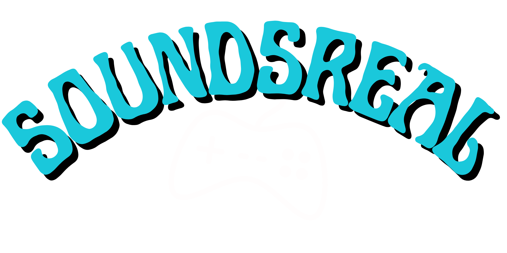

Isola Production is a recording studio I built during my music studies. I've been running it as a professional studio for the last two years. I maintain the site I developed with the help of a web designer friend.

SoundsReal is a project born from Isola Production's attempt to enter the video game industry as a music and sound provider. All pages, graphics and videos are made by me. This is a project that I would like to never stop.

Comfy Penguin Games is a project born from SoundsReal, I am actually a member of the team of this indipendet group of game developers.